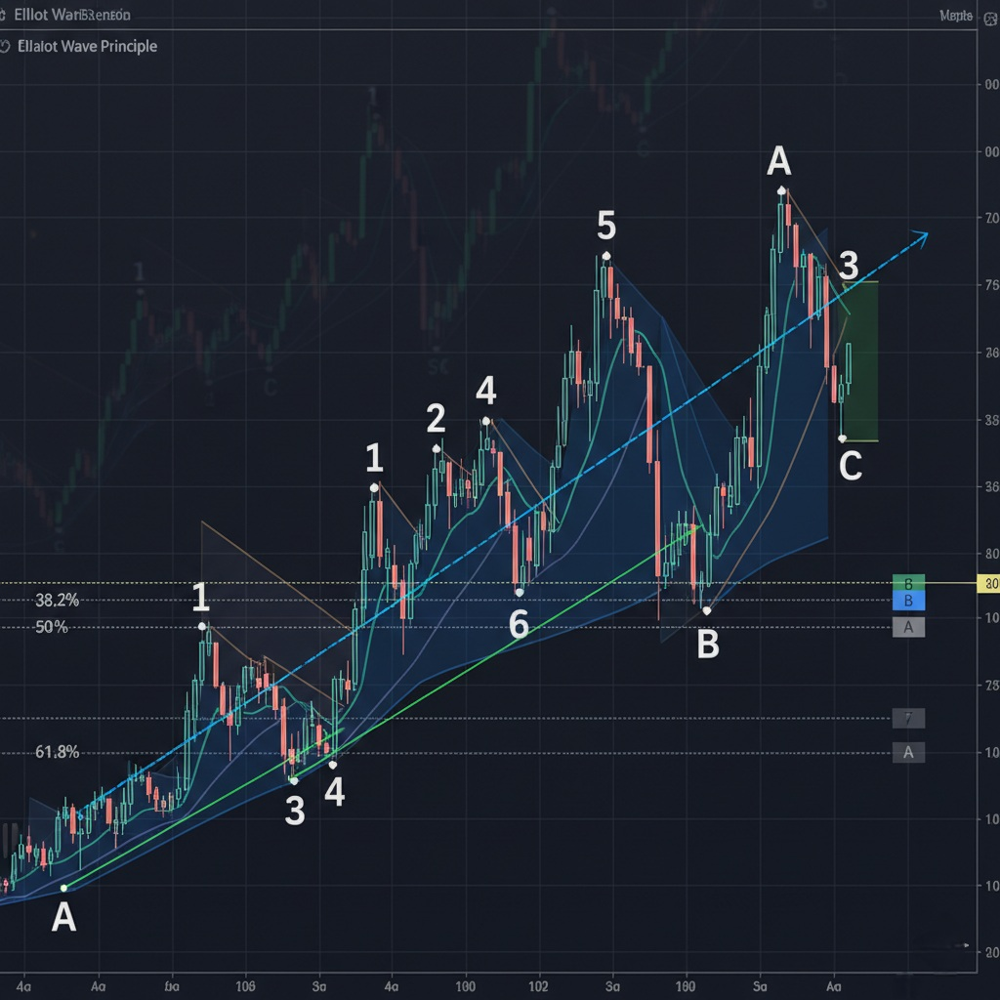
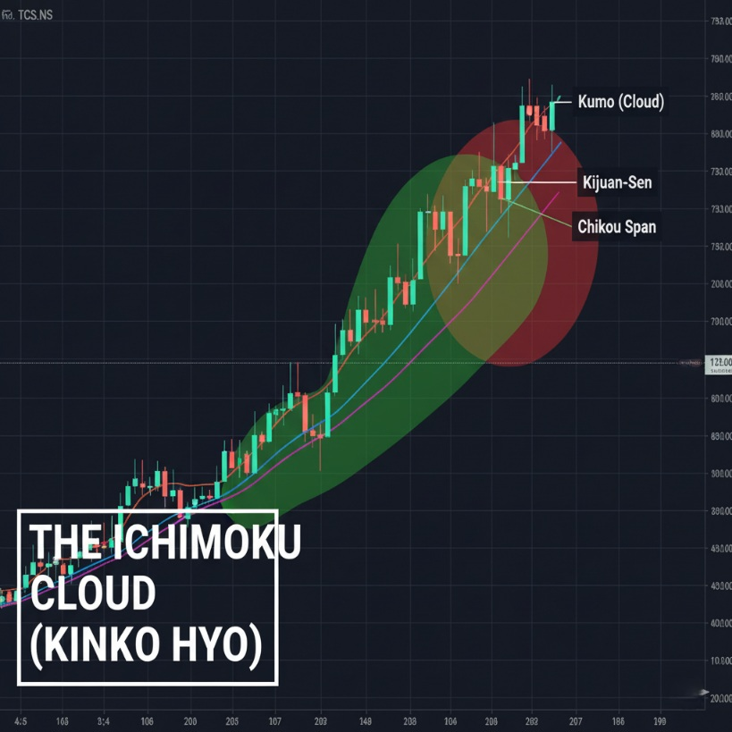
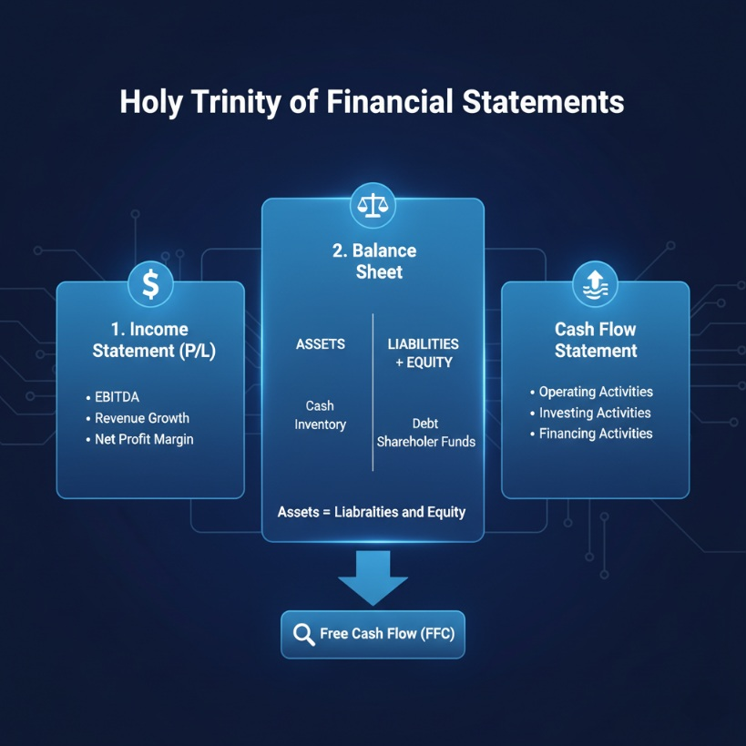
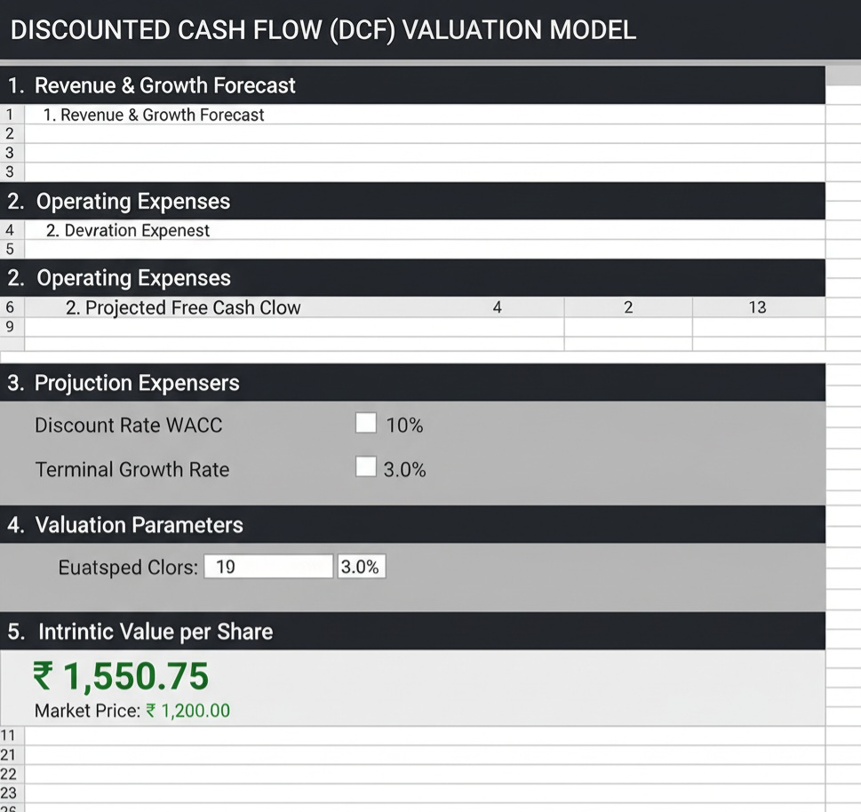
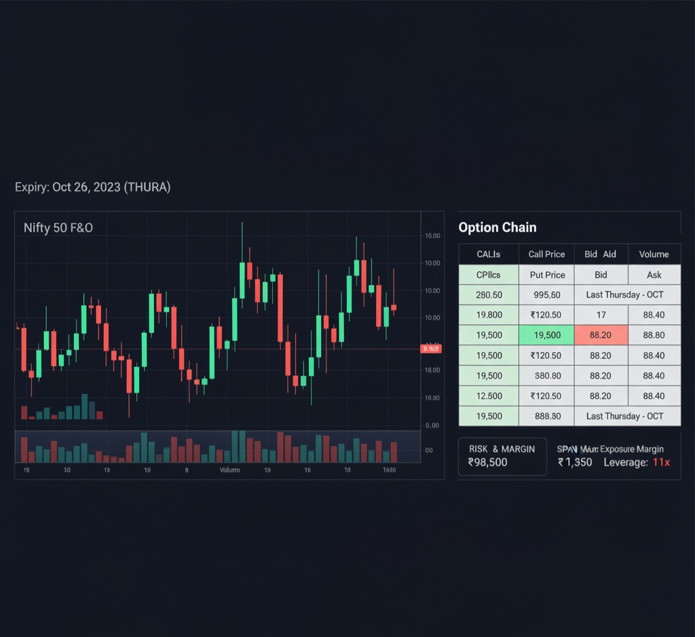
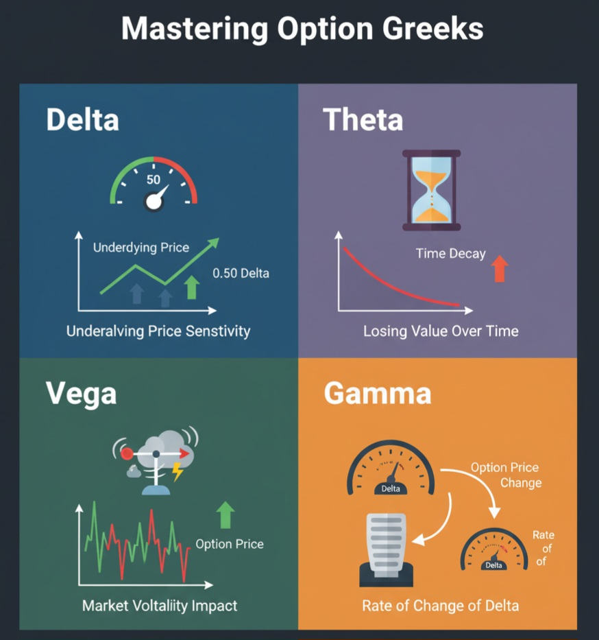

Level 3: Advanced Trading & Derivatives Advanced
Transition from passive investor to
You will learn the professional methods of
What You Will Master in This Advanced Course
Advanced Technicals
- In-depth analysis of
Elliot Wave Theory and Fibonacci extensions. - Mastering complex indicators like
Ichimoku Cloud and ADX. - Identifying
Harmonic & Western Chart Patterns (e.g., Head & Shoulders).
Valuation & Research
- Deep dive into company
Financial Statement Analysis (P&L, Balance Sheet, Cash Flow). - Calculating
Intrinsic Value using the DCF (Discounted Cash Flow) model. - Advanced Ratio Analysis:
Free Cash Flow (FCF) and Margin of Safety.
F&O & Risk Management
- The mechanics and risks of
Futures and Options (F&O) trading. - Implementing essential
Option Strategies (Straddle, Strangle, Spreads). - Professional
Risk-Reward ratio and Position Sizing techniques.
Complete Advanced Course Syllabus
-
1. Advanced Technical Analysis: Decoding Market Geometry
Move beyond basic support/resistance. Learn the powerful, predictive tools of trend analysis and chart geometry used by institutional traders.
Elliot Wave Principle & Fibonacci
The market moves in repetitive wave patterns (Impulse & Corrective). Learn to identify the current wave to forecast the next move, using Fibonacci Retracements and Extensions to pinpoint exact targets and stop-losses.
Impulse Waves: The primary trend direction (usually 5 waves).Corrective Waves: The retracement against the trend (usually 3 waves).Fibonacci Retracement: Key levels (38.2%, 61.8%) where price often reverses.
Classic & Harmonic Chart Patterns
Identify high-probability continuation and reversal signals, like the classic
Head & Shoulders , and the more complexGartley andButterfly Harmonic patterns. -
2. Advanced Indicators: Ichimoku, ADX, and Volume Analysis
Understand complex, multi-functional indicators that provide comprehensive snapshots of trend, momentum, and volatility on a single chart.
The Ichimoku Cloud (Kinko Hyo)
A leading indicator that offers support, resistance, momentum, and trend direction all at once. Learn to trade breakouts from the 'Kumo' (Cloud) and how to interpret the crossover of the Tenkan Sen and Kijun Sen lines.
ADX (Average Directional Index)
The ADX is not about direction, but
trend strength . Learn how to combine ADX with +DI and -DI to determine if a market is trending strongly (ADX > 25) or is consolidating (ADX < 20), and tailor your strategy accordingly. -
3. Fundamental Deep Dive: Financial Statement Analysis
Learn to dissect a company's financial reports like a professional analyst. This is where you determine a company's true health and find hidden value.
The Holy Trinity of Financials
- 💸 Profit & Loss (Income Statement)
- Focus on
EBITDA (Earnings Before Interest, Tax, Depreciation, and Amortization) andOperating Profit Margin for true business profitability. - ⚖️ Balance Sheet
- Analyze the
Debt-to-Equity ratio andCurrent Ratio to assess the company's long-term and short-term solvency. Look for low, manageable debt. - 💧 Cash Flow Statement
- The most important statement. Distinguish between Operating, Investing, and Financing cash flows. Focus on
Free Cash Flow (FCF) —the money left over for growth and dividends.
-
4. Intrinsic Valuation: Finding the Real Price (DCF Model)
Stop relying on P/E ratio alone. Master the Discounted Cash Flow (DCF) model to calculate the exact 'intrinsic value' of a stock, revealing whether it's truly undervalued or overvalued.
The Discounted Cash Flow (DCF) Model
This model estimates the value of an investment based on its expected future cash flows, discounted to the present value. It is the gold standard of professional valuation.
Forecasting FCF: Projecting the company's free cash flow for the next 5-10 years.Discount Rate (WACC): Determining the cost of capital to use for discounting.Terminal Value: Estimating the value of the company beyond the forecast period.
Margin of Safety: The Buffett Principle
The core concept of value investing. Learn to buy a stock when its market price is significantly below the intrinsic value you calculated. This margin protects you from errors in analysis and market volatility.
-
5. Introduction to Derivatives: Futures and Options (F&O)
Enter the high-leverage world of derivatives. Understand how Futures and Options contracts work, their market structure in India, and how to manage the inherent high risk.
Futures Contracts
An agreement to buy or sell an asset (like Nifty 50) at a predetermined price on a specified date. Learn about
Margin Requirements (SPAN and Exposure) and the concepts ofMark-to-Market (MTM) settlement.Leverage: The primary feature—control a large contract with a small margin.Expiry: The last Thursday of the month (for Indian F&O).
Options Contracts: Calls and Puts
The right, but not the obligation, to buy (Call) or sell (Put) an asset. Understand the difference between an Option Buyer (limited risk) and an Option Seller (unlimited risk).
-
6. Mastering Option Greeks & Basic Strategies
The advanced layer of Options. Learn the Greeks (Delta, Theta, Vega, Gamma) to understand how option prices change with market movements, time, and volatility.
Understanding the Option Greeks
Delta: Measures the change in option price for a one-point move in the underlying asset. (The speedometer)Theta: Measures the rate at which an option loses value as time passes (Time Decay). (The enemy of the option buyer)Vega: Measures the sensitivity to changes in market volatility. (The volatility gauge)Gamma: Measures the rate of change of Delta. (The accelerator)
Strategy Introduction (Spreads)
Learn to use two or more option legs to limit risk and define profit targets, like the
Bull Call Spread (bullish but risk-defined) andBear Put Spread (bearish but risk-defined). -
7. Professional Risk Management & Position Sizing
The difference between a gambler and a professional trader is risk management. Learn how to protect your capital and ensure long-term survival in the markets.
The 1% Rule and R-Multiple
Never risk more than
1% to 2% of your total trading capital on a single trade. This mathematical rule ensures you can withstand a streak of losing trades.R-Multiple: Expressing profit/loss in terms of initial risk (e.g., a 3R trade means profit was 3x the risk).Reward-to-Risk Ratio: Aim for a minimum of 1:2 or 1:3 for every trade setup.
The Role of Trading Journals
Learn to track, analyze, and review every trade. A journal turns random trading into a business operation by exposing emotional biases and revealing high-edge setups.
-
8. Trading Psychology & Behavioral Finance
Master the mind games. The final step is controlling your emotions (Fear and Greed) and understanding the psychological biases that sabotage most retail traders.
The Fear-Greed Cycle
Recognize the market cycle where Fear dominates at lows (causing panic selling) and Greed dominates at highs (causing reckless buying). Your job is to act rationally when others are emotional.
Confirmation Bias: Only looking for data that supports your trade, ignoring all contradictory signals.Loss Aversion: Holding onto losing trades too long because the pain of realizing a loss is too great.
Developing a Trading Plan
A written, mandatory set of rules covering entry, exit, stop-loss, and capital limits. Adherence to the plan removes emotion from decision-making, ensuring consistent execution.
Ready to Trade Like a Pro? Move Beyond Luck, Trade with Edge.
This course equips you with the tools and discipline of institutional traders. Your journey to advanced proficiency starts now.
Start Level 3 Course Now